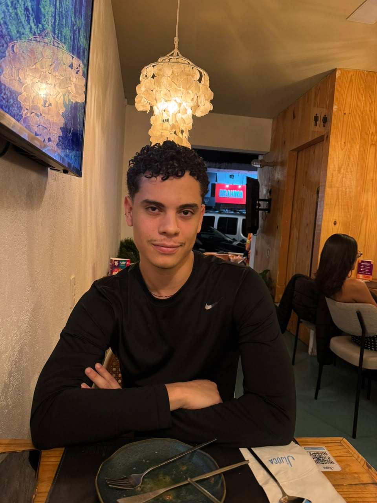

Desenvolvimento Web
- HTML5 Conhecimento básico
- CSS3 Conhecimento básico
- JavaScript Em aprendizado
Olá, mundo! Eu sou
Transformando curiosidade em conhecimento e conhecimento em projetos. Estou construindo minha trajetória na tecnologia, um código de cada vez.
Sou estudante de Sistemas de Informação e estou no segundo semestre da graduação. Atualmente, estou construindo minha base em tecnologia, explorando programação, desenvolvimento web, lógica e diferentes possibilidades dentro da área de TI.
Meu objetivo é transformar o aprendizado acadêmico em experiências práticas, desenvolver projetos, aprender com profissionais e conquistar minha primeira oportunidade na área.
Acredito que a tecnologia vai além do código: ela conecta pessoas, culturas, ideias e oportunidades.

O que já uso e o que estou aprendendo, sem inflar nada.
Trabalhos acadêmicos e exercícios do meu aprendizado. Os links entram conforme eu publicar cada um.
Análise e desenvolvimento de uma plataforma de comércio eletrônico para uma loja de bicicletas.
Análise de sistemas voltada à comunicação entre hemocentros e doadores, com notificações conforme a necessidade de estoque.
Exercício em C para calcular consumo, taxa de serviço e divisão de contas.
Espaço reservado para os próximos projetos que vou construir com HTML, CSS e JavaScript.
Este link ainda não está disponível. Em breve!
Início da graduação em Sistemas de Informação, aprofundando conhecimentos em lógica de programação, algoritmos, fundamentos da tecnologia e desenvolvimento de sistemas.
Explorando linguagens como C, Python, HTML, CSS e JavaScript, além de desenvolver atividades acadêmicas e pequenos projetos.
Buscando oportunidades de estágio, experiências práticas, colaboração em projetos e crescimento profissional.
Coordenadas do que me move fora da tela.
Tenho interesse em viajar, conhecer novos lugares, culturas, costumes e perspectivas. Acredito que cada experiência contribui para ampliar minha visão de mundo.
InteresseGosto de explorar ferramentas, tendências, novidades e possibilidades dentro do universo tecnológico.
InteressePaisagens, arquitetura e lugares que despertam curiosidade, um hobby que combina com viagens e exploração.
HobbyEstou sempre buscando aprender algo novo, descobrir novas possibilidades e expandir meus conhecimentos.
InteresseEstou aberto a oportunidades de estágio, projetos, networking e conversas com pessoas que compartilham interesse por tecnologia.